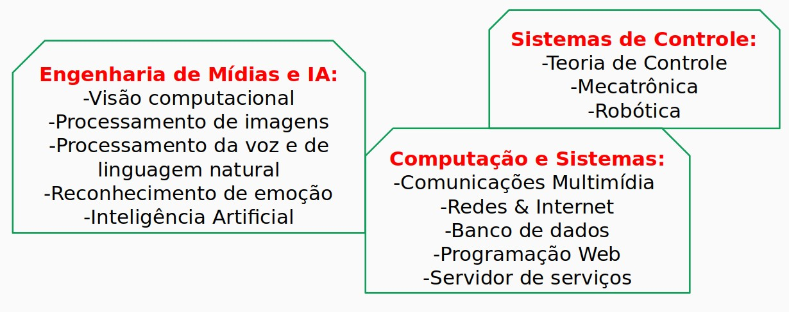

Presence.UFABC Presence.UFABC
Presence.UFABC Presence.UFABCObjetivo: Editais de IC da PROPES-UFABC
Modalidades: PIC, PIBIC, PIBIC-AF, PDPD, PDPD-AF
Descrição: o grupo Presence.UFABC convida alunos de graduação com bom desempenho a se candidatarem a bolsista ou a voluntário para atuarem em projetos de Iniciação Científica nas áreas e nos temas voltados para tecnologias de Tele-presença e de Tele-controle.
Requisitos para a candidatura:
-Ingresso na UFABC em 2024 ou anterior.
-Comprometimento, pró-atividade, e responsabilidade
-Disponibilidade de 20h semanais durante todo o período de vigência do projeto
-Boa proficiência na língua inglesa
Bem-vindos aos nossos desafios em pesquisa!
Submissão da candidatura:
Conceito de Telepresença: "Da tele-saúde à tele-educação e aos produtos e aplicações de teleoperação que irão mudar de forma irreversível como trabalhamos e vivemos, a telepresença terá um impacto significativo na qualidade de vida."
Projetos:
Tecnologias e metodologias:
Engenharia de Mídias e IA:
Sistemas de Controle:
Computação e Sistemas:
Perguntas e Comentários:
email: celso.kurashima@ufabc.edu.br
*******